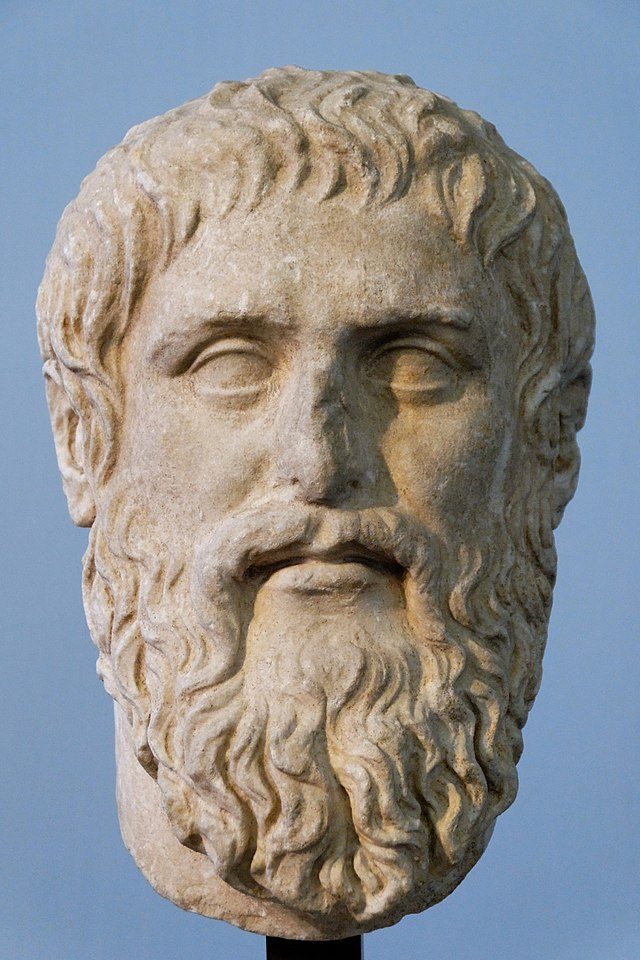

What is Philosophy
Philosophy is a branch of knowledge that explores fundamental questions about the nature of reality, existence, knowledge, ethics, and the meaning and purpose of life. It is a discipline that employs critical thinking and rational inquiry to examine these profound and abstract concepts
The word "philosophy" is derived from the Greek terms "philos," meaning "love," and "sophia," meaning "wisdom." Thus, philosophy can be understood as the love and pursuit of wisdom. Philosophers engage in rigorous analysis, logical reasoning, and contemplation to understand the fundamental principles that underlie the universe and human existence.
Through philosophical inquiry, philosophers seek to address fundamental questions such as: What is the nature of reality? What can we know, and how can we acquire knowledge? What is the basis for moral and ethical judgments? What is the nature of consciousness and the mind? What is the meaning and purpose of life? These inquiries often involve rigorous analysis, critical examination of assumptions, and consideration of diverse perspectives.
Western and Eastern Philosophy
Eastern and Western philosophy represent distinct philosophical traditions that have evolved in different regions and cultures. Western philosophy, with its roots in ancient Greece, focuses on individualism, rationality, and logical analysis. It places a strong emphasis on the individual's rights, autonomy, and the pursuit of truth through systematic reasoning. Western philosophy has explored various branches such as metaphysics, epistemology, ethics, and political philosophy, often employing analytical and critical thinking methods.
In contrast, Eastern philosophy encompasses diverse traditions like Indian, Chinese, and Japanese philosophy. It emphasizes harmony, interconnectedness, and spiritual development. Eastern philosophy often explores concepts such as karma, enlightenment, and the dissolution of dualistic distinctions. It tends to prioritize the collective over the individual, emphasizing social harmony, communal values, and the interdependence of individuals within a larger whole. Eastern philosophy frequently employs contemplative and intuitive approaches, with practices like meditation and self-reflection being key components. Time is often perceived cyclically or as an illusion, and the focus is on the present moment and the interconnectedness of all things
Western Philosophers
Diogenes
Diogenes of Sinope (404—323 B.C.E.), an ancient Greek philosopher, was a prominent figure in the school of Cynicism. Known for his unconventional lifestyle and radical views, Diogenes challenged societal norms and materialistic pursuits. He believed in living in accordance with nature, rejecting social conventions and embracing simplicity. Diogenes embraced a minimalist lifestyle, often choosing to live in a large ceramic jar or a public space rather than a conventional home. He renounced material possessions, considering them unnecessary distractions that hindered true happiness and enlightenment. Diogenes believed that genuine fulfillment came from internal virtue rather than external possessions. Another distinctive aspect of Diogenes' philosophy was his rejection of social hierarchies and societal expectations. He openly criticized authority figures and questioned the values of his time. Diogenes emphasized the importance of personal freedom and self-sufficiency, advocating for a life of self-reliance and independence. Diogenes was notorious for his eccentric behavior and biting wit. He used satire and sarcasm to expose the hypocrisy and pretentiousness of his contemporaries. His unapologetic honesty and willingness to challenge conventional wisdom earned him both admiration and notoriety. Despite his unconventional lifestyle, Diogenes' philosophical ideas were profound and influential. He believed that virtue and wisdom were attainable by anyone, regardless of social status or wealth. Diogenes encouraged individuals to live authentically, free from the constraints imposed by society, and to focus on self-improvement and the pursuit of knowledge. Diogenes' legacy continues to resonate in modern times, inspiring individuals to question societal norms, find contentment in simplicity, and strive for personal authenticity. His philosophy serves as a reminder that true happiness and fulfillment lie not in material possessions but in the pursuit of wisdom, self-mastery, and living in harmony with nature.
Socrates
Socrates was a classical Greek philosopher who lived from 469 BCE to 399 BCE. He is considered one of the founders of Western philosophy and played a significant role in shaping the philosophical tradition that followed him. While Socrates did not leave behind any written works, his ideas and teachings were transmitted through the works of his students, primarily Plato. Socrates is best known for his Socratic method, a form of inquiry and dialogue aimed at stimulating critical thinking and seeking knowledge. He believed that true wisdom comes from recognizing one's own ignorance and engaging in self-examination. Socrates sought to challenge people's beliefs and assumptions by asking probing questions that exposed contradictions and inconsistencies in their reasoning. His approach to philosophy focused on moral and ethical issues, seeking to understand the nature of virtue, justice, and the good life. Socrates emphasized the importance of virtue and the pursuit of knowledge as the foundation for a meaningful and fulfilled existence. He believed that the ultimate goal of human life was the cultivation of one's soul and the pursuit of moral excellence. Socrates' commitment to truth and integrity made him a controversial figure in Athens. He criticized the traditional gods and was accused of corrupting the youth and undermining the city's religious beliefs. As a result, he was put on trial and sentenced to death by drinking hemlock. Socrates' death became a symbol of the tension between individual freedom of thought and expression and the constraints imposed by society. Despite his untimely demise, Socrates' influence endured through the works of his student Plato and subsequent philosophers. His emphasis on critical thinking, self-examination, and the pursuit of wisdom continues to be foundational in the field of philosophy and has left a lasting impact on Western intellectual tradition.
Plato
 Plato was an ancient Greek philosopher who lived from around 428 or 427 BC to 348 or 347 BC. He was a student of Socrates and the teacher of Aristotle, and is considered one of the most influential figures in Western philosophy. Plato's philosophical ideas are presented in the form of dialogues, in which characters engage in discussions and debates on various topics. He explored a wide range of subjects including metaphysics, ethics, politics, epistemology, and aesthetics. One of Plato's central concepts is the Theory of Forms. According to this theory, the physical world we perceive is merely a reflection or imperfect copy of an ideal and unchanging realm of forms or ideas. These forms represent the true essence or nature of things, while the physical world is transient and subject to change. Plato also believed in the immortality of the soul and the existence of an eternal realm of pure knowledge. He argued that true knowledge is not obtained through sensory experience, but through rational contemplation and the recollection of knowledge that the soul possesses before birth. In terms of ethics and politics, Plato proposed the idea of the "philosopher king" as the ideal ruler. He argued that those who have attained the highest level of philosophical understanding should be the ones to govern society, as they possess the wisdom and knowledge necessary to make just and virtuous decisions. Plato's works, such as "The Republic" and "The Symposium," continue to be studied and debated by scholars and philosophers to this day. His ideas have had a profound influence on Western philosophy, shaping subsequent philosophical thought and laying the foundation for many philosophical and political concepts.
Eastern Philosophers
Lao Tzu
Lao Tzu, also known as Laozi, was an ancient Chinese philosopher and the author of the Tao Te Ching, one of the foundational texts of Taoism. Little is known about his life, and historical accounts often mix legend with reality. Lao Tzu's teachings and philosophy revolve around the concept of Tao, which can be translated as "the Way" or "the Path." According to Lao Tzu, the Tao is the underlying force that governs the universe and encompasses everything. It is an eternal and ineffable principle that cannot be fully grasped or defined. Lao Tzu encourages individuals to live in harmony with the Tao and to embrace the natural flow of life, rather than resisting or trying to control it. One of Lao Tzu's key teachings is the idea of Wu Wei, often translated as "non-action" or "effortless action." It is not a passive state but rather an attitude of going with the flow, allowing things to unfold naturally without force or resistance. By practicing Wu Wei, one can achieve a state of balance and harmony, both within oneself and with the world. Lao Tzu emphasizes the importance of simplicity and humility. He advises people to let go of desires and attachments, as they often lead to suffering and dissatisfaction. Instead, he promotes the cultivation of inner virtue, such as compassion, moderation, and selflessness. Lao Tzu believes that by embracing these qualities and aligning with the Tao, individuals can find true peace and contentment.
Buddha
Buddha, whose birth name was Siddhartha Gautama, was a spiritual leader and the founder of Buddhism. Born in ancient India around the 5th century BCE, Buddha's teachings and philosophy have had a profound impact on millions of people around the world. Siddhartha Gautama was born into a royal family, but he became disillusioned with the materialistic and transient nature of worldly life. Seeking answers to the fundamental questions of human existence, he renounced his privileged life and embarked on a spiritual quest for enlightenment. After years of intense meditation and self-discipline, Siddhartha Gautama achieved enlightenment while sitting under a Bodhi tree. He became known as Buddha, meaning "the awakened one." Buddha's enlightenment experience revealed to him the Four Noble Truths, which form the core of Buddhist philosophy. The Four Noble Truths state that suffering (dukkha) is an inherent part of human existence. They further explain that suffering arises from craving and attachment, and that it can be transcended by following the Noble Eightfold Path. The Noble Eightfold Path consists of a set of ethical guidelines and practices that lead to liberation from suffering and the attainment of enlightenment. It includes aspects such as right understanding, right intention, right speech, right action, right livelihood, right effort, right mindfulness, and right concentration
Sun Tzu
Sun Tzu, an ancient Chinese military strategist and philosopher, is renowned for his influential work "The Art of War." His teachings have transcended time and continue to be revered as a guide for not only warfare but also in various aspects of life, such as business, leadership, and strategy. Sun Tzu's profound understanding of human nature, tactics, and the importance of careful planning has made him an enduring figure. In "The Art of War," Sun Tzu emphasizes the significance of preparation and knowledge as the keys to victory. He emphasizes that the best way to conquer an adversary is to outsmart them rather than resorting to direct confrontation. Sun Tzu stresses the importance of assessing strengths and weaknesses, understanding the terrain, and employing superior strategies to gain a competitive edge. One of Sun Tzu's notable concepts is the idea of winning battles without fighting. He advocates for achieving victory through careful planning, efficient resource management, and psychological warfare. According to Sun Tzu, a successful commander understands the value of diplomacy, alliances, and the art of deception. He promotes the idea that the highest form of victory is to subdue the enemy without even engaging in battle. Sun Tzu's teachings also emphasize the significance of adaptability and flexibility. He emphasizes the need for commanders to be able to adjust their plans according to changing circumstances and to exploit their opponent's weaknesses. Sun Tzu's emphasis on strategic thinking and the ability to improvise has made his teachings relevant not only in military campaigns but also in everyday decision-making